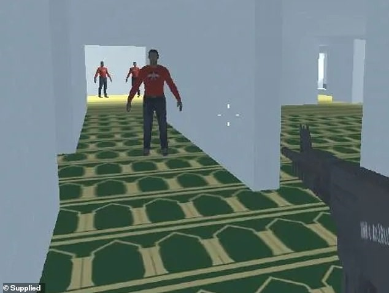
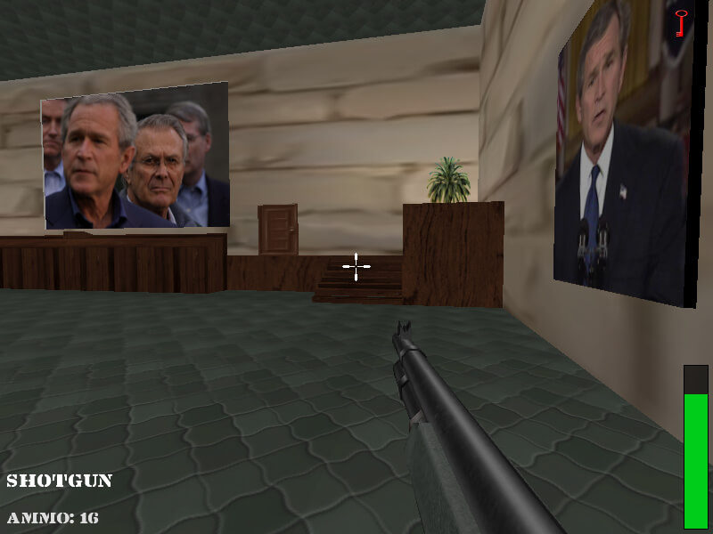

“Apps – A Traveler of Both Time and Space” was a talk by 10-year-old CyFi at ‘r00tz’, formerly known as DefCon Kids. CyFi explained how she was able to circumvent the built-in waiting process in some FarmVille-style task-based game. Basically, she got bored of waiting for hours to harvest her crops, and just bumped her system clock forward to trick the game. It Turns out CyFi had discovered an entirely new class of zero-day bugs across multiple tablet and smartphone operating systems.
While tricks like that used to work, developers have long built systems to prevent that from happening. Playing a video game is no different to filling out your taxes online. Ultimately you are using input devices (keyboard + mouse or a gaming controller), entering values into a computer application (a web form, game cartridge, or desktop application) and seeing what the outcome is on a monitor. I'd argue that one of the two is significantly more fun, but maybe you really love taxes and I am no one to judge. Ultimately both the online tax form and a video game are made of computer code. We hear about companies and their online applications being hacked all the time, but are videogames... hackable?
In fact, Video game hacking is a billion-dollar underground business to itself. The is always the player who wants the cheat, the cheat developer, the cheat reseller, and the people from the game development corporations trying to hunt the other three down. The business of game cheats is more complicated than it seems. But, that’s a topic for another day...
Why should we, Cyber Security professionals bother about video games so much?
Online gaming spaces allow users to immerse themselves in well-crafted digital worlds, narrative-driven experiences and online competitions. These spaces transcend national borders allowing 2.7 billion gamers from different age groups, genders and nationalities to come together in what is now the world’s most widely enjoyed pastimes. As video games have grown in popularity and increased interaction with social media content creators and other online communities such as live streaming platforms and discussion forums, a significant online gaming culture has emerged, with its own communication ecosystem and subcultures.
This presents a unique security challenge, as terrorists and violent extremists are capitalizing on the growing use of digital spaces to recruit, fundraise, radicalize and disseminate extremist propaganda.
Since the early days of internet, far-right extremists have been responsible for around 700 terrorist attacks worldwide. Many global terrorist organizations such as ISIS are increasingly trying to recruit Western youth. According to US intelligence experts, about 1000 foreign fighters join ISIS every month. Some of them are using the video game communication or gaming adjacent platforms for the process.
Using video games is a prominent recruitment strategy. Recruiters use high intensity language, a racial slur or similar language. What they’re fishing for is some kind of reaction from at least one person out of 50 – a laugh, a giggle or a reply in an affirmative tone. Once they get it, they’ll target that person and invite that person to a private chat groups like discord.
Research says it is common for adolescents to feel alienated and have a crisis of identity. They are in a state of continual changes, trying to find their identity and trying to find comfort. Sometimes this feeling of comfort comes from the wrong people. Extremists understand this vulnerability and their strategy is to make them feel welcomed and loved. They come to feel that they are a part of a community with these extremist friends online and to feel like these new online friends are real friends.
Terrorists and extremists are utilizing gaming culture to encourage acts of violence; in addition, terrorists have adopted gaming language, setup video game style competitions and live streamed attacks in a manner reminiscent of FPS (First Person Shooter) games.
ISIS educational apps which are directed towards children desensitize them about violence and encourage them to kill people and bomb things and so on. They do not have to develop such games from scratch but are able to modify existing games so they present the messages and play in the way that the modifier wishes.
A popular image shared by ISIS fighters in Syria with pop culture reference to the videogame Call of Duty
Terrorist groups have modified existing video games, have created their own - like the perpetrators of terrorist attacks in Christchurch, New Zealand in 2019 and also gamified reality and physical violence by broadcasting their attacks in videogame style and First-Person live feeds.

A footage of VincThePro building a military base in Minecraft
Researchers have also found extremist "roleplay" scenarios within games on various platforms that let players create and share their own custom maps and environments. These included Nazi concentration camps and a Uyghur detainment camp in games such as Roblox and Minecraft.

A screenshot from the Christchurch massacre footage (Left) which was live streamed to a set of audience - made to look like an FPS and the gamified Christchurch incedent(Right).
In 2019, white supremacist terrorist perpetrators in the Christchurch, New Zealand attack and the Halle, Germany attack, used livestreaming to amplify their attacks. These livestreams mimicked the streaming phenomenon where individuals livestream themselves playing video games to an audience and incorporated design elements of the FPS genre by allowing viewers to watch attacks from the perpetrator’s perspective.
Hunting for George Bush in the Global Islamic Media Front’s “Quest for Bush” (2006)
In 2006, Al-Qaeda group made changes to the First-Person Shooter (FPS) game Quest for Saddam (2003) and introduced another game called Quest for Bush. The goal of the original game was to kill Iraqi soldiers and capture Saddam Hussein, whereas Al-Qaeda completely reversed the players’ roles.

Game cover of Salil al-Sawarem, a failed adaption of the popular video game Grand Theft Auto (GTA) made by ISIS supporters.
And the list of the initiatives taken by terrorists and extremists to engage with their supporters and draw in new ones goes on...
The world was not ready to see cyberwarfare to come in the form of videogames. While the videogames themselves aren’t the issue, the people who are trying to manipulate and leverage them are. Young people who are establishing their identities, cognitive skills, and emotional intelligence and have a propensity for video games and digital social networks are particularly at danger due to the increasing frequency of violent extremist activity in these settings.
Tech companies do not have Subject Matter Expert teams on nuances of terrorism and violent extremism. Often companies have a safety team to cover every topic of harm from bullying to harassment to wider hate speech and this topic is being one of many. Instead of looking for solutions using the established systems, in my opinion, looking for fresh ideas gives more room for thought.
One of my main duties as a Cyber Threat Intelligence (CTI) Analyst is to monitor Threat Actors and their activities. On my daily basis, I use a CTI platform to get notified and notify fellow CTI Analysts around the world regarding any encounter I have with a threat actor. I create an intel of the common Tactics, Techniques and Procedures employed by these threat actors as well as the Indicators of Compromise. This shared intel can be used by other organizations around the world to safeguard themselves. Implementing such a shared intel among various console manufacturers and game developers is a win-win for all. This can be an effective proactive approach to keep the gaming and gaming-adjacent platforms a safer space. The existing videogames do not work this way. It requires a world of changes from the phases of development itself in the forthcoming games.
Today, extremism, terrorism and this beautiful virtual space created for pure amusement coexist. But in a decade or two from now, I’d like my kids playing any game they want without me being concerned.